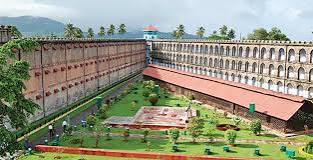
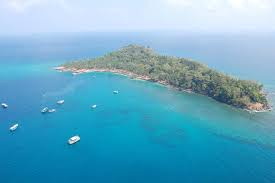
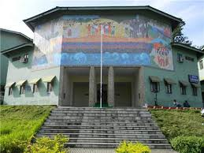
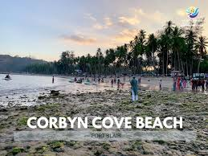
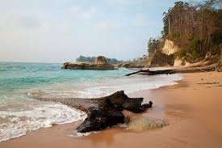
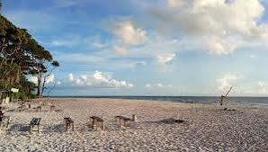
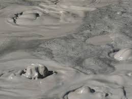
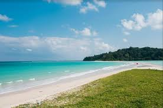
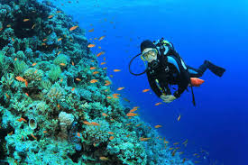

Port Blair
Cellular Jail National Memorial

Historic colonial prison used by the British to exile political prisoners.
Ross Island

Historic ruins of British administrative buildings and a small museum.
Anthropological Museum

Museum showcasing the indigenous tribes and culture of the islands.
Corbyn's Cove Beach

Scenic beach with water sports and sunset views.
Havelock Island (Swaraj Dweep)
Radhanagar Beach
Pristine beach known for its white sand and turquoise waters.
Elephant Beach
Beach known for snorkeling and coral reefs.
Kalapathar Beach

Scenic beach with black rocks and clear waters.
Neil Island (Shaheed Dweep)
Laxmanpur Beach

Beach known for sunset views and natural rock formations.
Bharatpur Beach
Beach with coral reefs and opportunities for snorkeling and glass-bottom boat rides.
Baratang Island
Mud Volcano

Natural phenomenon where mud bubbles up due to volcanic activity.
Limestone Caves
Caves formed by limestone deposits over centuries.
North Andaman Island
Diglipur

Town known for its beaches, turtle nesting sites, and Saddle Peak (highest point in the islands).
Ross and Smith Islands
Twin islands connected by a natural sandbar, ideal for snorkeling and swimming.
Little Andaman Island
Butler Bay Beach
Remote beach known for surfing and elephant safaris.
Nicobar Islands (Restricted Area)
Car Nicobar

Island with scenic beaches and indigenous Nicobarese culture.
Great Nicobar
Largest island with rainforests, endemic wildlife, and the Indira Point (southernmost point of India).
Adventure and Nature Activities
Scuba Diving and Snorkeling

Explore vibrant coral reefs and marine life around the islands.
Trekking and Hiking
Opportunities in the rainforests and hills of the islands.
Other Attractions
Barren Island
Active volcanic island with opportunities for boat tours to witness volcanic activity (subject to permissions).
Jarawa Tribal Reserve
Protected area for the indigenous Jarawa tribe.
Festivals and Cultural Events
Island Tourism Festival
Annual festival celebrating the cultural diversity of the islands with music, dance, and local cuisine.